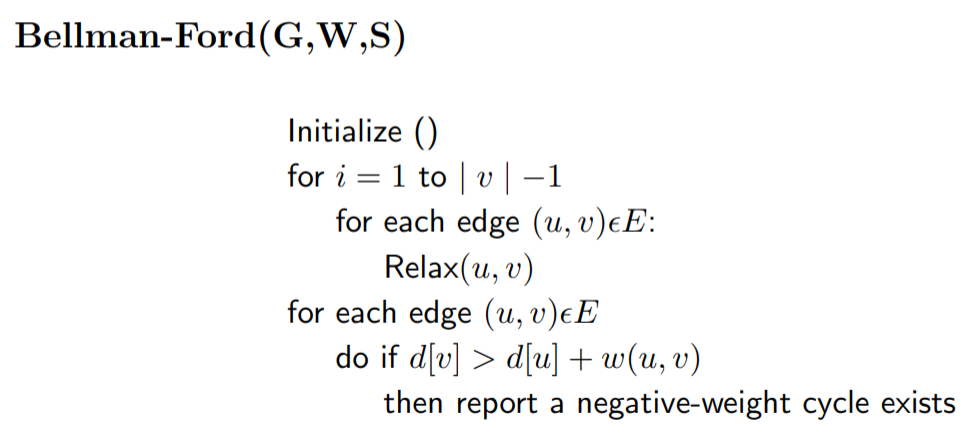
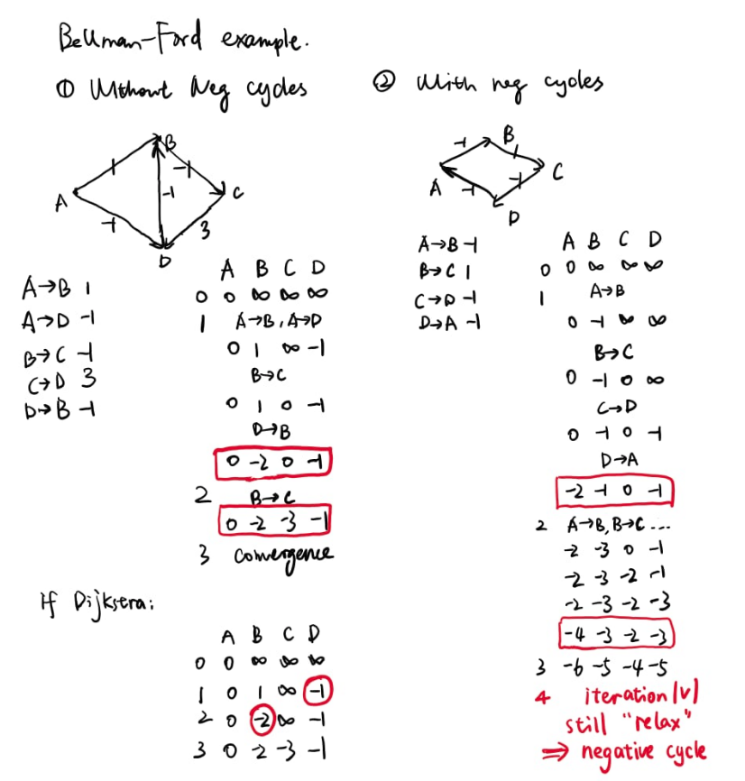

]
The Bellman–Ford algorithm is an algorithm that computes shortest paths from a single source vertex to all of the other vertices in a weighted digraph.
Here is the pseudo code.

In a short word, relax means use edge(u,v) to update value of V by U.
For each iteration 1 to |V|-1, for each edge in the graph, we update the destination vertex value.
If in iteration |V| it still exists a possible "relax" operation,
there is at least one negative loop in the graph. We can not use Dijkstra algorithm any more with that loops.
I attached two examples in the following, the first one is a graph only with negative weights.
The second one has negative loops so I only apply the bellman-Ford one.

In next blog, I will write about how to make these two algorithms parallel.